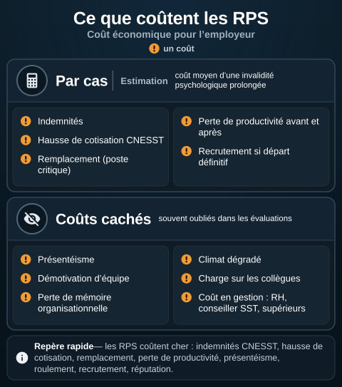
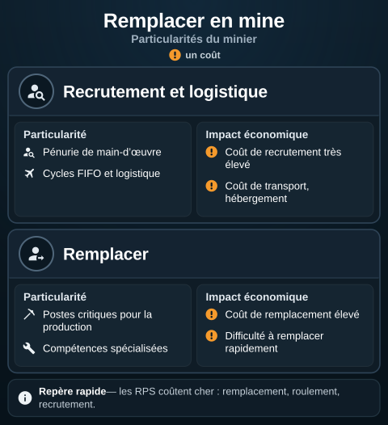

Coût économique des RPS pour l'employeur
L'essentiel : Les RPS coûtent cher : indemnités CNESST, hausse de cotisation, remplacement, perte de productivité, présentéisme, roulement, recrutement, réputation. Estimer ce coût permet de chiffrer le retour sur investissement de la prévention. Études convergentes : chaque dollar investi en prévention primaire RPS rapporte 2 à 5 dollars en économies sur 3 à 5 ans.
Catégories de coût
| Catégorie | Composantes |
|---|---|
| Indemnisation directe | Salaire pendant invalidité (assurance ou CNESST, rôles et pouvoirs), soins, traitements |
| Hausse de cotisation CNESST | Lésions reconnues = hausse du taux personnalisé |
| Remplacement | Coût d'un travailleur de remplacement, formation, intégration |
| Perte de productivité | Pendant l'absence, réduite à la rentrée |
| Présentéisme | Travailleurs présents mais en détresse, performance réduite |
| Roulement | Recrutement, formation, perte de compétences |
| Réputation employeur | Coût d'attractivité diminuée |
| Sanctions administratives | Si non-conformité LMRSST, vue d'ensemble pour les RPS |
| Litiges | Plaintes, recours, dommages |
Estimation par cas
Coût moyen d'une invalidité psychologique prolongée (synthèse des études)
| Élément | Coût estimé |
|---|---|
| Indemnités sur 6-12 mois | 25 000 $ à 75 000 $ |
| Remplacement (poste critique) | 10 000 $ à 50 000 $ |
| Hausse de cotisation CNESST, rôles et pouvoirs | Variable (5 000 $ à 30 000 $) |
| Perte productivité avant et après | 10 000 $ à 30 000 $ |
| Recrutement si départ définitif | 15 000 $ à 50 000 $ |
| Risque rechute | Multiplie les coûts si applicable |
| Total typique par cas | 50 000 $ à 200 000 $ |
Pour postes spécialisés ou de cadre, le coût peut dépasser 300 000 $ par cas.
Coûts cachés
Souvent oubliés dans les évaluations
{kind=link}

Toucher l'image pour l'agrandirLes éléments de l’estimation par cas et les coûts cachés que la page nomme. Schéma de principe : ni montant ni proportion ; la page donne des montants sans source précise.
D’après L’essentiel et les tableaux « Estimation par cas » (sans les montants) et « Coûts cachés » de cette page. Schéma de principe, sans montant ni proportion.
| Coût caché | Impact |
|---|---|
| Présentéisme | Estimé à 2-3 fois le coût d'absentéisme |
| Démotivation d'équipe (effet de contagion) | Productivité globale dégradée |
| Perte de mémoire organisationnelle | Compétences qui partent |
| Climat dégradé | Effet sur sécurité, qualité, innovation |
| Charge sur les collègues | Surcharge, risque cascade |
| Coût en gestion (RH, conseiller SST, supérieurs) | Heures consacrées au cas |
Retour sur investissement de la prévention
Études internationales convergentes
| Type d'intervention | ROI typique |
|---|---|
| Programme intégré de santé psychologique | 1 $ → 2 à 5 $ (3-5 ans) |
| Formation des superviseurs à la détection | ROI souvent élevé |
| Réorganisation et Latitude décisionnelle | Effet large mais difficile à isoler |
| Programmes individuels seuls | ROI faible |
| PAE | Modeste mais positif |
Logique : la prévention primaire a le meilleur ROI parce qu'elle évite des cas multiples sur la durée. Le tertiaire (PAE) traite un cas à la fois.
Application en mines
Particularités du minier
{kind=link}

Toucher l'image pour l'agrandirCe qui alourdit, sur un site minier, le coût du recrutement, de la logistique et du remplacement, d’après le tableau des particularités du minier. Schéma de principe : ni montant ni durée.
D’après le tableau « Particularités du minier » de la section « Application en mines » et L’essentiel de cette page. Voir aussi Comparatif des cycles FIFO. Schéma de principe, sans montant ni durée.
| Particularité | Impact économique |
|---|---|
| Salaires élevés | Coût d'indemnisation élevé |
| Postes critiques pour la production | Coût de remplacement élevé |
| Comparatif des cycles FIFO (14/14, 20/10, 21/7) et logistique | Coût de transport, hébergement |
| Pénurie de main-d'œuvre | Coût de recrutement très élevé |
| Compétences spécialisées | Difficulté à remplacer rapidement |
| Petites équipes | Effet de contagion plus fort |
Calcul type pour une mine moyenne
| Élément | Estimation annuelle |
|---|---|
| Cas d'invalidité psychologique (5-15) | 250 000 $ à 3 000 000 $ |
| Roulement lié aux RPS | Variable mais souvent significatif |
| Présentéisme | Difficile à mesurer mais important |
| Hausse cotisation | Variable selon historique |
Coût d'un programme de prévention RPS structuré : à partir de 50 000 à 200 000 $ par année selon la taille du site (conseiller SST, formations, outils, suivi).
Le rapport coût-bénéfice est largement favorable à la prévention.
Documents et outils
| Document | Type | Source |
|---|---|---|
| Études internationales sur le coût des RPS | Articles | OMS, EU-OSHA |
| Rapports IRSST sur le coût des lésions | Rapports | irsst.qc.ca |
| Modèle de calcul de coût d'invalidité | Gabarit | À adapter |
| Rapport « Mental health at work » OMS | who.int | |
| Calculateurs ROI prévention | Variables | EU-OSHA |
Voir le centre de ressources : 📁 Documents et outils.
Pour aller plus loin
Références
- OMS et OIT (2022). Mental health at work: policy brief.
- EU-OSHA. Calculating the costs of work-related stress.
- IRSST. Études sur le coût des lésions professionnelles.
- Conference Board of Canada. Études sur la santé mentale au travail.
Articles wiki connexes
Pages qui pointent ici (7)
- ❓ FAQ démarrage SST psychosociale
- 🔤 Index alphabétique des articles SST psychosociale
- Le « tough guy » et l'évitement du signalement SST psychosociale
- Relation stress-performance SST psychosociale
- Risques Psychosociaux (RPS) SST psychosociale
- Risques Psychosociaux (RPS) SST psychosociale
- Tableau de bord SST psychosociale pour direction SST psychosociale